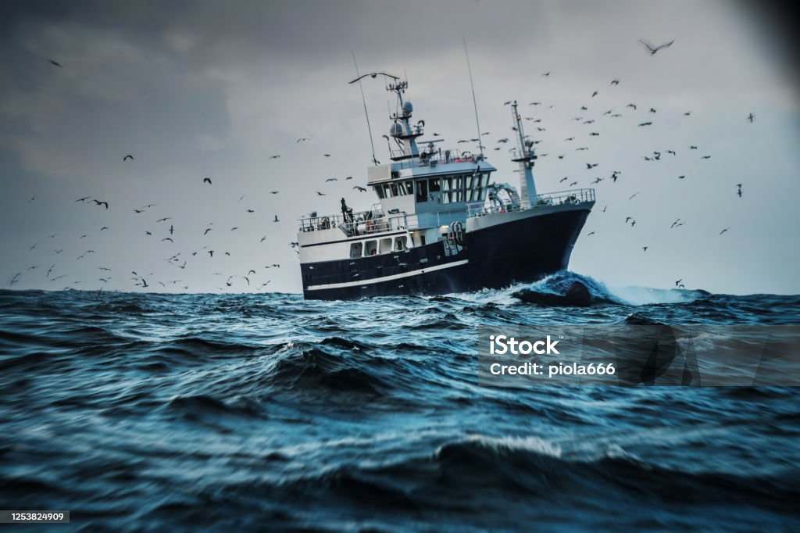
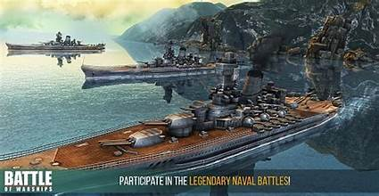

|

The naval Battle of Lagos took place between a British fleet commanded by Sir Edward Boscawen and a French fleet under Jean-François de La Clue-Sabran over 18–19 August 1759 during the Seven Years' War. The French Mediterranean Fleet succep>ssfully passed through the Strait of Gibraltar, but was sighted by a British ship. De Boscawen left his anchorage and raced in pursuit and after considerable confusion, in which many ships delayed and aiming in a second squadron. After that was pursued, La Clue changed course, but half of his ships failed to follow him in the dark. The British caught the French squadron west of the Gulf of Cadiz. Fierce fighting ships were captured. The British pursued the remaining six French ships overnight; only two managed to escape. The four survivors attempted to shelter in neutral Portuguese waters near Lagos, but Boscawen violated that neutrality, capturing two of the ships and destroying the other two.(Full article...) Recently featured:
Did you know...
Synagogue of Deal |
Ronnie O'Sullivan
On this dayAugust 18: Long Tan Day in Australia (1966)  |